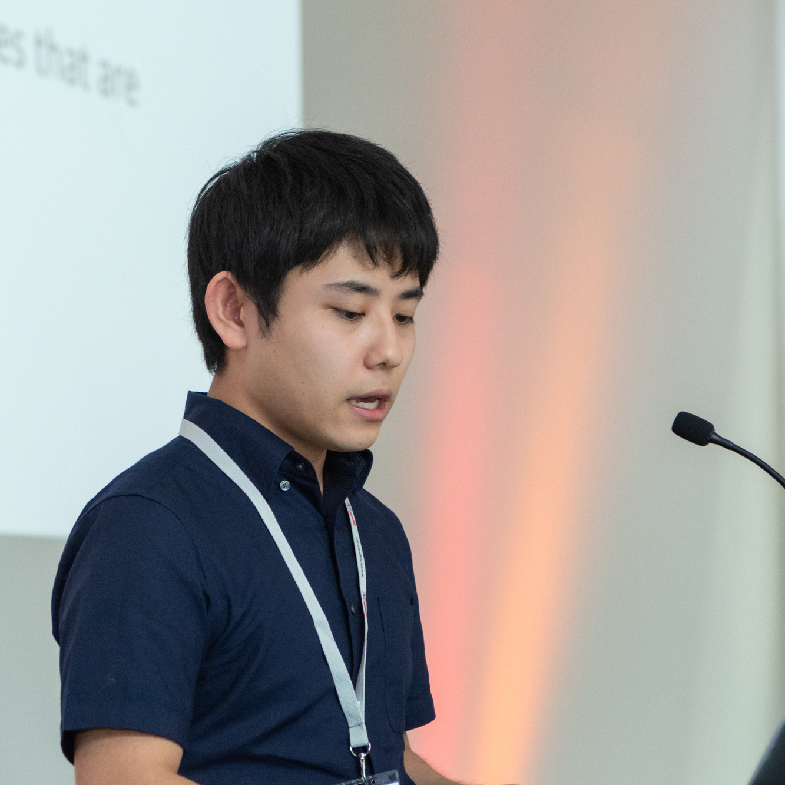

About Me

Yosuke Higuchi / 樋口 陽祐
2nd year graduate student at Waseda University, advised by Prof. Tetsunori Kobayashi.
Education
Waseda University
Tokyo, Japan
Apr. 2019 - Present
M.S. in Computer Science and Engineering
- Research Topic: End-to-end speech recognition
- Supervisor: Tetsuji Ogawa, Tetsunori Kobayashi
Apr. 2015 - Mar. 2019
B.E. in Computer Science and Engineering
- Research Topic: Zero-resource speech recognition
- Supervisor: Naohiro Tawara, Tetsuji Ogawa, Tetsunori Kobayashi
Research Interest
Automatic Speech Recognition
- End-to-End Speech Recognition
- Low-resource Speech Recognition
Work Experiences
Dec. 2019 - Mar. 2020
Johns Hopkins University, MD, USA
- Visiting scholar/research internship
- Worked on end-to-end speech recognition
- Supervisor: Shinji Watanabe
Jun. 2019 - Oct. 2019
IBM Research AI, Tokyo, Japan
- Research internship
- Worked on speaker diarization
- Supervisor: Masayuki Suzuki, Gakuto Kurata
Aug. 2018 - Sept. 2018
NTT Communication Science Laboratories, NTT Corporation, Kanagawa, Japan
- Research internship
- Worked on voice conversion
- Supervisor: Hirokazu Kameoka
Sept. 2016 - Jun. 2017
InfoDeliver Corporation, Tokyo, Japan
- Part-time software engineer
- Worked on developing and maintaining web services and mobile apps
Publications
Preprint
International conference (peer-reviewed)
- Yosuke Higuchi, Naohiro Tawara, Atsunori Ogawa, Tomoharu Iwata, Tetsunori Kobayashi, Tetsuji Ogawa, "Noise-robust Attention Learning for End-to-End Speech Recognition," 28th European Signal Processing Conference (EUSIPCO), January 2021. (to appear)
- Yosuke Higuchi, Shinji Watanabe, Nanxin Chen, Tetsuji Ogawa, Tetsunori Kobayashi, "Mask CTC: Non-Autoregressive End-to-End ASR with CTC and Mask Predict," 21th Annual Conference of International Speech Communication Association (INTERSPEECH). October 2020. (to appear) [arXiv]
- Yosuke Higuchi, Masayuki Suzuki, Gakuto Kurata, "Speaker Embeddings Incorporating Acoustic Conditions for Diarization," 2020 IEEE International Conference on Acoustics, Speech and Signal Processing (ICASSP), May 2020. (Virtual) [IEEE Xplore] [article]
- Yosuke Higuchi, Naohiro Tawara, Tetsunori Kobayashi, Tetsuji Ogawa, "Speaker Adversarial Training of DPGMM-based Feature Extractor for Zero-Resource Languages," 20th Annual Conference of International Speech Communication Association (INTERSPEECH), September 2019. (Oral) [pdf]
Domestic conference / workshop
- 樋口陽祐，渡部晋治，Chen Nanxin，小川哲司，小林哲則，"Mask CTC: CTCとマスク推定に基づいた非自己回帰的なEnd-to-End音声認識，" 日本音響学会研究発表会講演論文集 (ASJ)，September 2020.
- 樋口陽祐，鈴木雅之，倉田岳人，"ダイアライゼーションのための音響的環境を考慮した話者エンベディング，" 日本音響学会研究発表会講演論文集 (ASJ)，September 2020.
- 樋口陽祐，俵直弘，小川厚徳，岩田具治，小林 哲則，小川哲司，"Attentionに関する損失を利用したノイズに頑健なEnd-to-End音声認識，" 日本音響学会研究発表会講演論文集 (ASJ)， March 2020.
- 樋口陽祐，俵直弘，小林哲則，小川哲司，"DPGMMと敵対的学習に基づく話者の違いに頑健な特徴抽出とゼロリソース音声認識での評価，" 情報処理学会研究報告 (SLP)，July 2019.
- 樋口陽祐，俵直弘，小川哲司，小林哲則，"ゼロリソース言語音声認識のための発話者の違いに頑健な特徴抽出，" 日本音響学会研究発表会講演論文集 (ASJ)，March 2019.
Awards & Grants
Contact
Address
Perceptual Computing Lab.
Room 40-701 27 Waseda-machi
Shinjuku-ku, Tokyo 162-0042, Japan